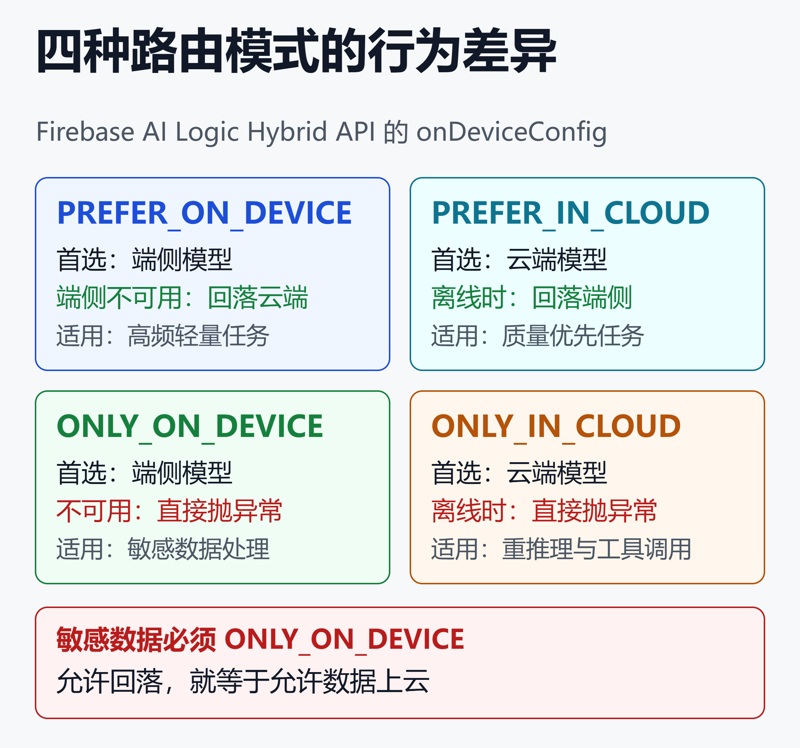
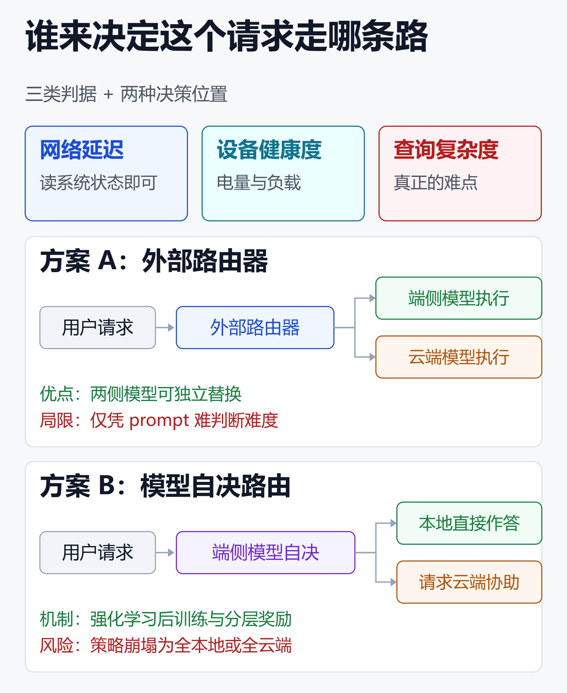

端云协同部署实战2026：四种路由模式、七类场景与选型清单
IDC 预计 2026 年全球生成式 AI 手机出货量达到 4.32 亿台，Gen AI PC 达到 0.5 亿台，国内生成式 AI 手机渗透率突破 50%。
但更值得注意的不是这两个数字，而是 IDC 给出的突围方向：端边云协同算力、原生智能体系统、全场景生态。三个词里，第一个就是协同。
与此同时，Kakao Mobility 把地址识别从云端搬到端侧后，新用户转化率涨了 45%，下单完成时间降了 24%。而它同时保留了一条云端兜底路径。
这两件事指向同一个结论：2026 年的问题不再是「端侧能不能跑大模型」，而是「哪个请求走端侧、哪个走云端、谁来决定、决定错了怎么办」。
这篇文章拆四件事：四种已经标准化的路由模式、路由判据落在哪一层、七类真实落地场景、以及一份可以直接用的选型清单。
一、从「要不要上端侧」到「怎么分工」
过去两年关于端侧大模型的讨论，重心一直在「能不能跑」。2026 年这个问题基本被硬件解决了。
高通骁龙 X2 Elite 的 NPU 算力达到 100 TOPS，专为端侧大模型推理优化。骁龙 8 Elite Gen 6 更进一步，在 NPU 里加了专门针对生成式 AI 和智能体负载的硬件单元。
端侧模型也补齐了。vivo 蓝心 BlueLM Nano 3B 以 2.9B 参数拿下 10B 以内多模态榜单第一，同门的 BlueLM-V-3B 在 CVPR 2025 上给出了算法与系统协同设计的完整方案。
能力到位之后，真正的工程问题浮出水面：端侧和云端的能力差距是客观存在的，而且不会消失。
端侧赢在延迟、隐私、单次成本、离线可用。云端赢在能力天花板、模型体积、世界知识。这是两组不同的约束，不存在一方替代另一方。
中兴通讯技术期刊把云端集中式推理的瓶颈归为三条：带宽压力大、推理延迟高、算力资源紧张。北邮与紫金山实验室的研究则给出了边缘侧的分层部署方案，让数据供给、空间保障、时间重叠三件事协同起来。
换句话说，学术界和产业界都已经接受了同一个前提：协同是终局，不是过渡。
二、四种路由模式：混合推理已经是标准 API
这是很多人没注意到的变化。混合推理不再需要自己搭，Google 已经把它做成了 Android 官方 API。
Firebase AI Logic Hybrid API 通过一个 onDeviceConfig 参数定义推理模式，一共四种：
PREFER_ON_DEVICE：优先用端侧模型，端侧不可用或不支持该请求时自动回落云端PREFER_IN_CLOUD：设备在线时优先云端，只有离线时才回落端侧ONLY_ON_DEVICE：只用端侧，不可用时直接抛异常ONLY_IN_CLOUD：只用云端，离线或模型不可用时抛异常
对应的调用代码只是多了一个配置项：
val model = Firebase.ai(
backend = GenerativeBackend.googleAI()
).generativeModel(
modelName = "gemini-3.5-flash",
onDeviceConfig = OnDeviceConfig(
mode = InferenceMode.PREFER_ON_DEVICE
)
)

图里最关键的信息是右下两格：ONLY_* 两种模式不做回落，而是抛异常。这不是 API 设计缺陷，是刻意的。
用户直觉里的「网络好用云端、断网切端侧」，对应的是 PREFER_IN_CLOUD。这个模式在消费级体验上最优，但它在合规场景下是错的。
原因很简单：一旦允许自动回落，就意味着数据可能在某次网络抖动后被发送到云端，而你不知道是哪一次。
所以处理敏感数据的功能必须用 ONLY_ON_DEVICE——端侧不可用就明确失败（fail closed），而不是悄悄换条路。这是端云协同架构里最反直觉、也最容易做错的一条。
Android 官方文档把混合推理的收益概括为两点，值得原样记下来：
- 扩大覆盖面：云端作为关键兜底，处理 Gemini Nano 因硬件或系统限制而不可用的设备
- 成本与离线能力：端侧保证离线可用，同时把常规任务卸载到本地以降低云端推理成本
注意第一点的方向——是云端给端侧兜底，而不是反过来。这和大多数人的第一反应相反，因为端侧能力的碎片化比云端可用性的波动严重得多。
三、路由判据：三个信号与两种决策位置
四种模式是策略，但「这个请求到底难不难」需要判据。Android 文档给出了自定义路由的三个实时因素：
- 网络延迟
- 设备系统健康度（例如电量水平、处理器负载）
- 用户查询复杂度
前两个好办，读系统状态就行。第三个是真正的难点。

外部路由器：工程上最省事，但有天花板
微软的 Foundry Local 加 Microsoft Foundry 方案是典型代表：用一个轻量本地模型先对每个请求做分类，简单或敏感的留在设备上，只有真正困难或需要前沿能力的才升级到云端。
这个做法的好处是解耦——路由器和两侧模型可以独立替换。代价是路由器看到的只有 prompt。
普渡大学团队在 arXiv 2509.24050 里把这个局限说得很直白：只看 prompt，外部路由器很难判断这道题到底有多难，需要复杂推理的任务尤其判断不准。
一道数学题看起来很短，但可能需要十步推理。一段长文档看起来很重，但可能只是要提取一个电话号码。prompt 的表面特征和实际难度不是一回事。
模型自决：把路由能力训进端侧模型
同一篇论文的方案是把决定权交回端侧模型自己：推理到一半，它自己判断要不要请云端帮忙。这个判断能力不是写死的规则，而是用强化学习训出来的。
具体做法是把端侧模型的后训练建模成奖励最大化问题，设计分层奖励同时鼓励两件事：本地解决问题、以及在必要时明智地卸载到云端。
工程上最难的是防止策略崩塌——模型很容易偷懒，退化成「全部本地执行」或者「全部甩给云端」两个极端。论文用组级策略梯度稳定优化稳住训练，再用自适应 prompt 过滤补上另一类学习信号。
在 LLaMA 和 Qwen 的端侧规模模型上，这套方法在多个推理基准上稳定超过基线，和完整云端模型的差距也明显缩小。该工作已被 PMLR 306（2026）收录。
这条路线的意义在于：难度判断的信息其实藏在模型的内部状态里，外部路由器拿不到。让模型自己说「这题我不会」，比让另一个模型猜「它会不会」更准。
现阶段的现实选择是：产品先用规则路由跑起来，Google 官方也承认当前 Firebase 的实现只是「基于规则的初步方案」，更复杂的路由能力还在规划中。模型自决是下一代的事。
四、苹果 AFM 3：把路由做进了模型架构
如果只看一个端云协同的完整样本，选苹果 2026 年 6 月发布的第三代 Apple Foundation Models。
这是一个五模型家族，明确分成两层：
- 端侧：AFM 3 Core（30 亿参数 dense）、AFM 3 Core Advanced（200 亿参数稀疏架构）
- 云侧：AFM 3 Cloud、ADM 3 Cloud（图像）、AFM 3 Cloud Pro，全部运行在 Private Cloud Compute 上
AFM 3 Core Advanced 的架构值得单独讲，因为它把「路由」这个概念从系统层下沉到了模型内部。
权重放闪存，按 prompt 做路由
传统大模型不管是 dense（稠密）还是稀疏激活，都要求全部权重常驻 DRAM（也就是运行内存），这一项占用直接卡死了消费级硬件上能跑多大的模型。
AFM 3 Core Advanced 基于苹果的指令跟随剪枝（Instruction-Following Pruning）研究，把完整模型存在 NAND 闪存里，而不是 DRAM。
关键的工程约束在这里：NAND 到 DRAM 的带宽太慢，做不到标准 MoE 那样逐 token 换专家。
苹果的解法是把路由决策的粒度从 token 级放大到 prompt 级。一个轻量 dense 块在初始处理阶段选定一组固定专家，生成过程中周期性重选。为了减少数据搬运，模型依赖大比例常驻的「共享专家」，只在需要时把「路由专家」换入 DRAM。
这个 200 亿参数的模型每次只激活 10 亿到 40 亿参数，具体数量取决于请求难度。
苹果把这个特性叫「推理时弹性」：不必所有任务都用同一个模型，也不用维护一堆小模型，而是按用例预设激活参数量，让权重按请求难度增量加载。
这其实就是端侧内部的一次路由——难的请求多激活几个专家，简单的少激活几个。端云协同的思路被复制到了模型内部。
云端也不只有一档
云侧三个模型的分工同样是路由问题。AFM 3 Cloud 是主力，优化速度和效率；AFM 3 Cloud Pro 才处理最苛刻的场景，比如智能体工具调用和复杂推理。
有意思的是 AFM 3 Cloud Pro 的部署：苹果与 Google、NVIDIA 合作，把 Private Cloud Compute 扩展到了 Google Cloud 的 NVIDIA GPU 上，同时保持隐私保证不变。
也就是说，连「云端」本身都被拆成了自有芯片和第三方 GPU 两层。
效果数据
苹果公布的人工评测里，AFM 3 Core 在通用文本能力上相比 2025 年端侧基线，在 45.6% 的 prompt 上被偏好，基线只有 23.3%。
云侧提升更大：AFM 3 Cloud 对比 2025 年服务端模型，在 64.7% 的 prompt 上被偏好，基线仅 8.7%。整体响应满意度相对提升约 36%。
AFM 3 Cloud Pro 在此之上再提升约 10%（文本）和 14%（图像理解），数学类任务相对提升 14%。
端云之间的能力差距，正好就是这些百分比。它不是噪声，是你在做路由决策时必须承认的现实。
还有一个容易忽略的信号
WWDC26 的 Foundation Models framework 开放了 Language Model protocol——开发者可以接入任意模型提供方，包括 Claude、Gemini。
这意味着苹果承认了一件事：端云协同的「云」不必是自家的。协议化之后，云端变成可替换组件。
五、端侧模型与运行时：没有单一最优解
端侧这一侧的选型比云端复杂，因为模型和运行时是两个独立维度，而且它们相互影响。
运行时格局
目前主流选项可以按用途分三类：
- 产品化嵌入：ExecuTorch、LiteRT-LM、CoreML、MNN、Foundry Local
- 通用推理内核：llama.cpp、MLX
- 本地开发工具：Ollama、LM Studio
Foundry Local 的定位值得一提：相比 Ollama、llama.cpp、LM Studio、vLLM，它更偏向「要出货的产品」而不是实验工具。
一份 iPhone 上的实测对比给出了反直觉的结果：Qwen 3.5 2B 上 MLX 解码最快（61 tok/s），而 Gemma 4 E2B 上 LiteRT-LM 明显胜出（55 tok/s）。
结论很明确：没有全局最优运行时，只有特定模型上的最优运行时。选型必须在你自己的目标模型上实测，照搬别人的 benchmark 会踩坑。
模型选型
3B 到 4B 是目前手机端的主流区间。Phi-4-mini（3.8B）在 Q4 量化下约占 3GB 显存，适合 8GB 硬件；Gemma 3 4B 的优势是多模态和 140 多种语言。
Gemma 3n 走的是另一条路，用逐层嵌入参数缓存和 MatFormer 架构降低计算与内存需求，并原生支持音频输入。
国内侧 MiniCPM-V 系列专门针对手机上的图像和视频理解做优化。vivo BlueLM-GUI 则更进一步，是能理解自然语言指令并自主操作手机界面的多模态 GUI Agent。
量化这一层的细节，可以看我们之前写的手机跑 27B 大模型？1-bit 量化落地指南与模型选型 2026；模型全景可以参考2026端侧大模型全景：当多模态AI塞进你的手机和笔记本。
六、七类落地场景
下面七类都有公开案例或官方文档支撑，按端云分工方式分组。
1. 输入法改写与校对：端侧为主，云端兜底
Gboard 用自定义混合推理驱动校对和改写功能。这类场景端侧优势压倒性：输入框里的文字高度敏感，请求量极大，延迟直接影响手感。
2. 信息抽取：端侧跑，云端补覆盖面
Kakao Mobility 的案例是目前公开数据最完整的一个。Kakao T 服务超过 3000 万用户，快递下单原本靠司机手工把地址填进表单，繁琐且易错。
团队用 ML Kit GenAI Prompt API 调用 Gemini Nano 做实体抽取，prompt 就是「从消息中提取收件人姓名、地址和电话」。他们准备了约 200 个高质量评测样例，用少样本提示反复迭代降低幻觉。
结果是：下单完成时间下降 24%，新用户转化率提升 45%、老用户提升 6%，旺季 AI 下单量增长超过 200%。
为了最大化覆盖面并提供稳健兜底，团队同时实现了一条基于 Gemini Flash 的云端路径。这是典型的 PREFER_ON_DEVICE。
3. 图像合规判定：端侧跑，因为图里有位置信息
同一个团队还用 Gemini Nano 的多模态能力判断共享单车是否违停在盲道上，评测了 200 多张标注图片，用准确率、精确率、召回率和 F1 分数把功能推到生产级。
选端侧的理由不只是成本。用户上传的停车照片包含位置信息，走云端会引入隐私和安全顾虑。
这是第 2 点和第 3 点的关键差异：信息抽取用了云端兜底，图像合规判定没有。数据敏感度决定了要不要允许回落。
4. 语音转写与合成：端侧模型已经赢了
AFM 3 Core Advanced 在 10 亿激活参数规模下，表达性语音的 MOS 评分（语音自然度的主观打分，满分 5 分）拿到 4.15，比苹果现有生产环境的语音合成系统高 0.28。换成对话式文本，差距拉到 0.42（4.24 对 3.82）。
听写方面，整体质量偏好度 44.7% 对 17.6%，标点符号维度甚至是 50.2% 对 12.4%。
语音是端侧最先完全吃下的模态，因为它延迟敏感、数据敏感、且不需要世界知识。
5. 车载座舱：断网是常态而非异常
隧道、地下车库、山区道路——车载场景的弱网不是边缘情况，是日常。这类场景必须端侧保底，云端只做增强。
我们在AI大模型重塑智能交通2026：从端到端自动驾驶到城市交通治理的七大应用场景全景里展开过交通侧的完整图景。
6. 工业与政企内网：跨网闸而非跨公网
浙江工业大学团队的电机实验台架预警系统给出了一个值得参考的三层架构：边缘感知、内网推理、跨网闸推送。
注意这里的「云」是内网侧，不是公网。政企和工业场景的端云协同，协同对象往往是同一个物理网络里的两级算力，而不是互联网上的 API。
这类场景的默认模式应该是 ONLY_ON_DEVICE 或内网固定路由，绝不允许自动回落公网。
7. 手机 GUI Agent：屏幕内容不出端
BlueLM-GUI 这类智能体要读屏幕、点按钮、填表单。屏幕内容里可能有聊天记录、银行余额、身份信息。
这是端侧执行的最强理由之一，也是端侧智能体在 2026 年快速推进的原因。华为 HarmonyOS 在 HDC 2026 上宣布全面支持端侧多模态 Agent，小米、OPPO、vivo 都展示了跑在本地的视觉-语言-动作智能体。
操作系统层的变化可以参考AI Native OS 群雄逐鹿：从 Step AOS 到 HarmonyOS 7，操作系统正在被重写。
七、六个容易被低估的坑
坑一：测试矩阵直接翻倍
同一个 prompt 在端侧和云端的输出质量、格式稳定性、工具调用能力都不同。苹果公布的偏好度差距就是量化证据。
这意味着每个功能你都要在两条路径上分别验收，而不是测一条推另一条。如果你用了 PREFER_ON_DEVICE，还要测「回落瞬间发生在流式输出中途」这种边界情况。
坑二：敏感数据的回落是默认开启的
PREFER_ON_DEVICE 听起来很安全，但它的语义是「端侧不行就上云」。任何涉及个人数据、医疗信息、企业机密的功能，都必须显式改成 ONLY_ON_DEVICE。
一个可执行的检查做法是给每类数据打标签，在路由层强制校验：
data_class = classify(request)
if data_class in SENSITIVE:
mode = ONLY_ON_DEVICE # fail closed
else:
mode = PREFER_ON_DEVICE
坑三：端侧能力碎片化比云端波动严重
苹果明确说 AFM 3 Core Advanced 只在「最强 Apple silicon 系统」上解锁。Android 侧的 Gemini Nano 同样受硬件和系统版本限制。
结果是：同一个 App 在不同设备上走的可能是完全不同的路径。你的功能矩阵实际上是「功能 × 设备档位」。
坑四：模型分发是隐性成本
端侧模型要下载、要更新、要占存储。一个 3B 模型 Q4 量化后约 2GB，这对应用包体和首次启动体验都是硬约束。
更麻烦的是版本管理：云端模型换版本是服务端行为，端侧模型换版本要走 OTA，两侧版本可能长期不一致，而你的 prompt 是按某个版本调优的。
坑五：观测断了一半
端侧推理默认不产生服务端日志。走云端的请求你能看到全链路，走端侧的看不到——而端侧恰恰是你希望承载大部分流量的那一侧。
需要在客户端补埋点，把路由决策、端侧耗时、回落原因上报回来。可观测性方案可以参考Langfuse 相关实践的思路，但要注意端侧上报本身也有隐私边界。
坑六：成本模型不是线性的
端侧推理「免费」只是没有 token 费用。实际成本转移到了电量、发热、以及因此导致的用户流失。
高负载下持续跑端侧推理会明显影响续航，这也是为什么 Android 把「设备系统健康度」列为路由判据之一——电量低的时候，走云端反而是对用户更友好的选择。
八、选型清单
先按数据敏感度定模式，再按场景特征定端云比例。
第一步：按数据敏感度锁定模式
| 数据类型 | 推荐模式 | 回落策略 |
|---|---|---|
| 个人隐私数据 | 仅端侧 | 失败即报错 |
| 屏幕与位置信息 | 仅端侧 | 失败即报错 |
| 企业内部数据 | 端侧或内网 | 不出内网 |
| 公开内容处理 | 优先端侧 | 可回落云端 |
| 复杂推理任务 | 优先云端 | 离线回落端侧 |
第二步：按场景特征定端云比例
| 场景特征 | 端侧占比 | 判断依据 |
|---|---|---|
| 高频短请求 | 高 | 成本与延迟 |
| 弱网或离线 | 高 | 可用性优先 |
| 需世界知识 | 低 | 能力天花板 |
| 需工具调用 | 低 | 智能体能力 |
| 语音与转写 | 高 | 端侧已够用 |
第三步：技术栈选择顺序
按这个顺序决策，可以少走弯路：
- 先定数据边界，产出敏感数据清单和对应的强制模式
- 再定端侧模型，在 3B 到 4B 区间选，确认目标设备档位覆盖率
- 然后在目标模型上实测多个运行时，不要照搬他人 benchmark
- 路由先用规则实现，把网络、电量、数据类别三个信号接进来
- 补客户端观测埋点，至少记录路由决策和回落原因
- 最后才考虑模型自决路由这类进阶方案
第四步：确认三条底线
- 敏感路径 fail closed，绝不静默回落
- 两条路径都有独立验收用例
- 端侧不可用时有明确的用户可见降级提示，而不是转圈
如果你的场景是企业内部智能体，部署侧的完整路径可以参考企业AI Agent部署实战：从0到1600个Agent的落地路径；如果需要在云端侧统一多家模型供应商，LiteLLM 深度调研：用一个开源网关统一 100+ 大模型的完整实战指南里的网关方案可以直接接在路由器后面。
小结
端云协同在 2026 年已经从架构选项变成默认前提。IDC 把「端边云协同算力」列为生成式 AI 手机的突围方向，Google 把混合推理做成了 Android 官方 API，苹果把路由决策下沉进了模型架构。
但用户直觉里的「网络好就用云端、断网切端侧」只是四种模式之一，而且是合规场景下最危险的那一种。敏感数据必须 fail closed，端侧不可用就明确失败，不能悄悄换条路。
路由判据有三个：网络延迟、设备健康度、查询复杂度。前两个读系统状态就行，第三个是真问题——外部路由器只能看 prompt，而 prompt 的表面特征和实际难度不是一回事。学术界的答案是把路由能力通过强化学习训进端侧模型，让模型自己说「这题我不会」。
落地层面，语音转写、信息抽取、图像判定、输入法改写这几类端侧已经能独立承担；需要世界知识和复杂工具调用的仍然必须走云端。车载、工业内网、GUI Agent 这三类场景的端侧是刚需而非优化。
真正容易被低估的成本有三个：测试矩阵翻倍、端侧能力按设备档位碎片化、端侧推理的观测默认是黑盒。这三条都不是模型问题，是工程问题，也正是端云协同项目的实际工期所在。
免责声明
本文内容基于公开资料整理，不构成任何投资建议或商业决策依据。文中涉及的产品能力、参数、性能数据与定价均可能随厂商更新而变化，实际部署前请以官方最新文档为准。涉及个人数据、医疗信息或企业机密的 AI 功能，请在合规团队参与下评估数据边界与回落策略。
参考来源
- Android Developers —— Hybrid inference
- Android Developers Blog —— Kakao Mobility uses Gemini Nano on-device to reduce costs and boost call conversion by 45%
- Android Developers Blog —— Experimental hybrid inference and new Gemini models for Android
- Firebase 文档 —— Build hybrid experiences with on-device and cloud-hosted models
- Apple Machine Learning Research —— Introducing the Third Generation of Apple's Foundation Models
- Apple Security Research —— Expanding Private Cloud Compute
- Apple Developer —— WWDC26 Apple Intelligence guide
- arXiv —— Bridging On-Device and Cloud LLMs for Collaborative Reasoning: A Unified Methodology for Local Routing and Post-Training
- Microsoft Tech Community —— Hybrid AI Agents in Python: Routing Between Foundry Local and Microsoft Foundry
- IDC 亚太区博客 —— 2026 年中国 AI 市场十大预测
- SitePoint —— Hybrid Cloud/Local LLM: The Complete Architecture Guide 2026
- Google AI for Developers —— Gemma 3n 模型文档
- GitHub —— OpenBMB/MiniCPM-V 手机端多模态模型
- GitHub —— vivo-ai-lab/BlueLM-GUI 多模态 GUI 智能体
- arXiv —— BlueLM-2.5-3B Technical Report
- CVPR 2025 —— BlueLM-V-3B: Algorithm and System Co-Design for Multimodal LLMs on Mobile Devices
- Medium —— Local LLM on iPhone: which runtime is actually fastest
- 腾讯云开发者社区 —— 从云端到指尖：2026 端侧多模态 AI Agent 的工程化突围之路
- 中兴通讯技术 —— 面向边缘场景的高效大模型分层部署机制
- MarketsandMarkets —— 边缘 AI 软件市场预测报告